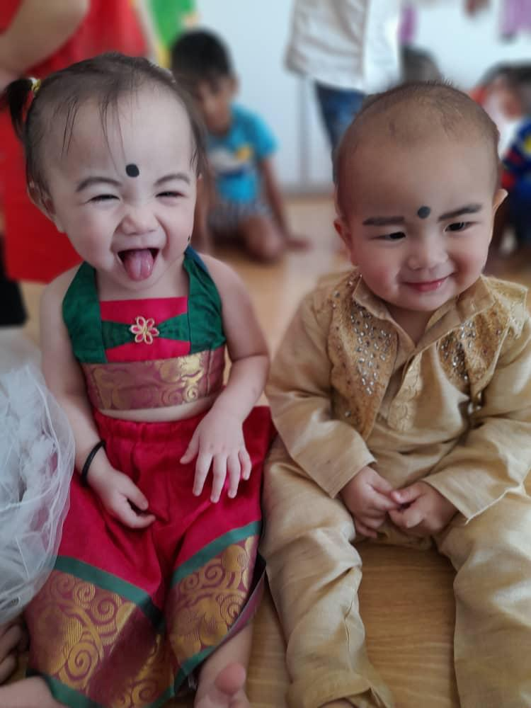

From 6 months
Infant care
A calm nursery with sensory play and steady routines. On a visit, meet the team and talk through your baby’s feeding, naps and settling-in needs.
From infant care at 6 months to toddler classes, flexible daycare and Thursday enrichment. We speak English, and every day makes time for play.

Start with your child’s age and the hours your family needs. Ask us on WhatsApp about current fees, available places and the best next step.
From 6 months
A calm nursery with sensory play and steady routines. On a visit, meet the team and talk through your baby’s feeding, naps and settling-in needs.
Ages 1–3
Hands-on play helps toddlers practise language and fine motor skills, build their first friendships and try things for themselves.
Monday to Friday
Learning, play, meals and rest are part of the day. Choose a schedule that suits your family:
Thursdays, 5:15–6:30 pm
A new theme each month, with activities such as cooking, painting and simple science experiments. Sessions are in English.
See the rooms, ask how we help children settle in and talk through fees, hours and availability before deciding.
No. 17, Jalan Jambu Mawar 3, Taman Sri Jarom, 42600 Jenjarom, Selangor. Looking for kindergarten for ages 3–6? See Tadika Pelita Ilmuku’s kindergarten programmes.